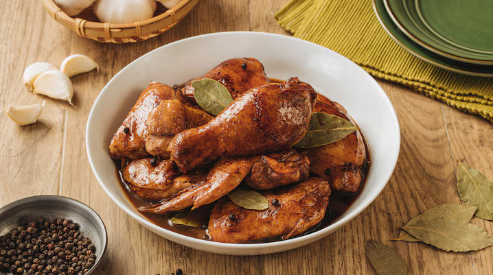

Adobong Manok
Home

Description
Chicken adobo is often regarded as the national dish of the Philippines. It relies on the pairing of soy sauce and vinegar as its foundation. Chicken pieces simmer gently in this mixture until tender and richly coated in a garlicky reduction.
Ingredients
- 2 tablespoons canola oil
- 6 cloves garlic (crushed)
- 1 piece onion (sliced)
- 1 kilogram chicken cut-ups
- 2 tablespoons vinegar
- 1/4 cup soy sauce
- 1 cup water
- 2 pieces bay leaves
- 1 teaspoon whole black peppercorns (slightly crushed)
- 2 pieces Knorr Chicken Cubes
- 1 teaspoon brown sugar (packed)
Steps
- Sauté Aromatics Heat oil in a heavy-bottomed pot over medium heat and sauté garlic and onions until fragrant and lightly softened. Do not let the garlic burn.
- Sear Chicken Add chicken pieces to the pot and sear on all sides until the skin is lightly browned. Work in batches if needed to avoid overcrowding. Tip: Browning creates deeper flavor through caramelization and helps render excess fat from the skin.
- Add Seasonings and Simmer Pour in vinegar, soy sauce, and water. Add bay leaves, peppercorns, and Knorr Chicken Cubes. Bring to a boil over high heat, then reduce to a gentle simmer. Do not cover the pan and let it cook for about 10 minutes, or until the chicken is nearly tender but not falling apart. Remove chicken pieces from the sauce. Tip: Keep the pot uncovered so the vinegar cooks off properly and mellows instead of tasting raw.
- Fry Chicken Pieces In a frying pan over medium heat, fry the simmered chicken pieces until the exterior turns deeper brown and slightly crisp. Set aside. Tip: This second browning builds texture and intensifies flavor while helping the chicken hold up during the final simmer.
- Simmer Adobo Sauce Until Thick Return the fried chicken pieces to the pot with the adobo sauce. Add brown sugar and simmer again until the sauce reduces and thickens enough to coat the chicken. Serve warm.